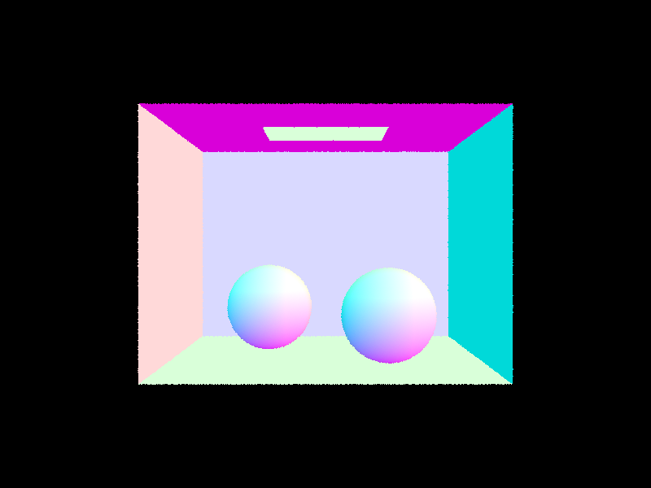
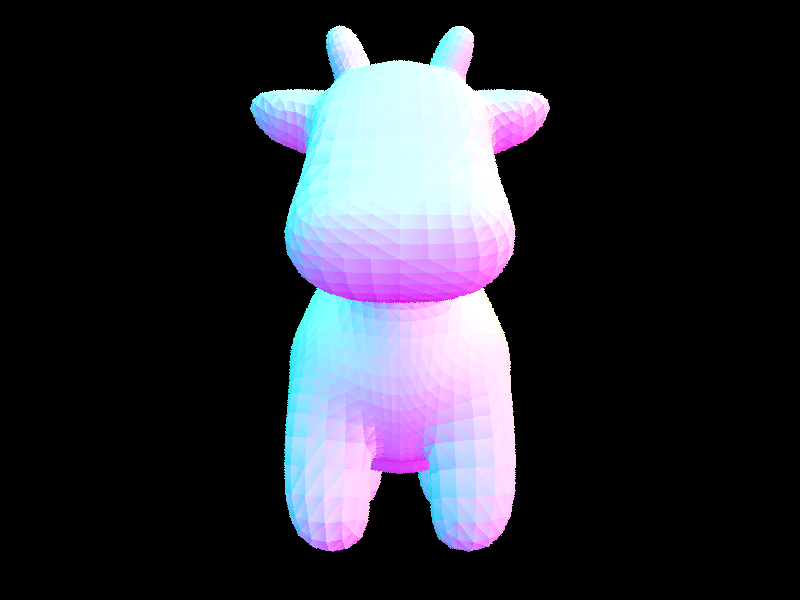
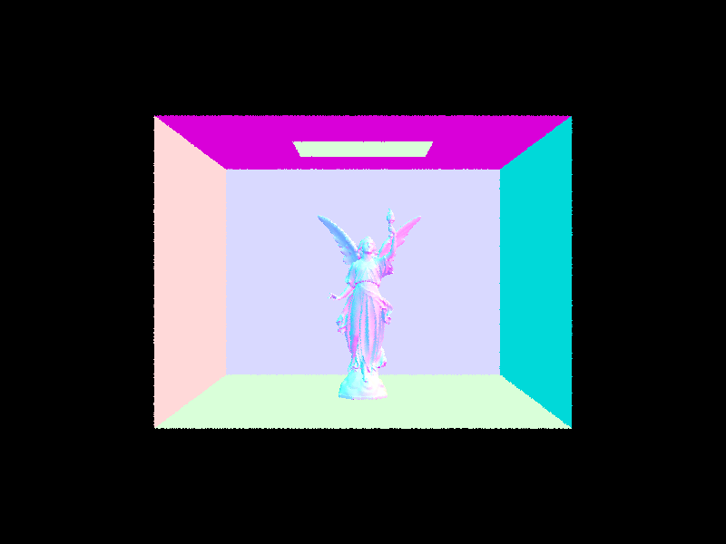
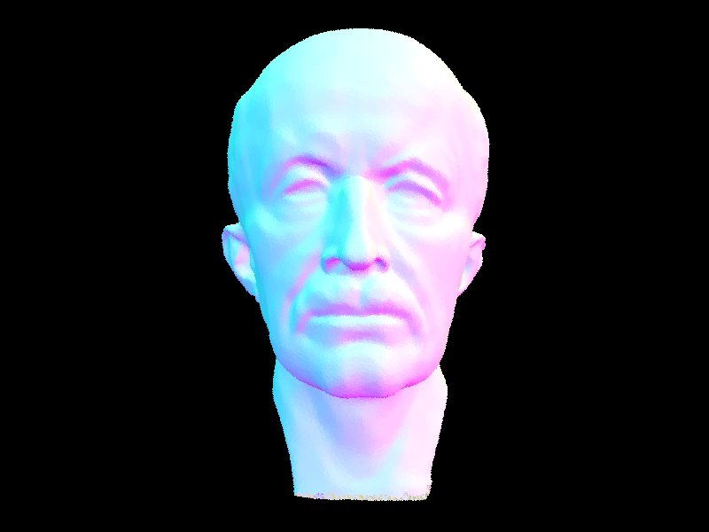
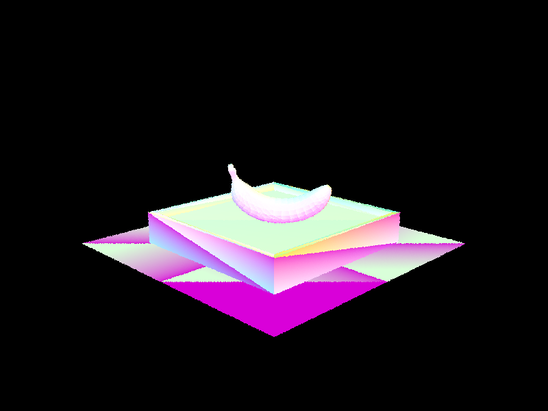
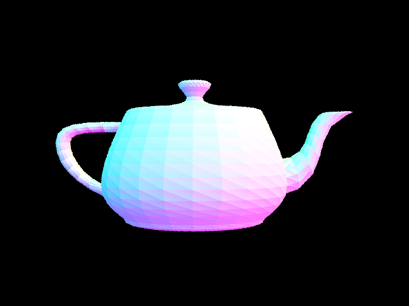
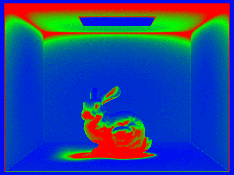
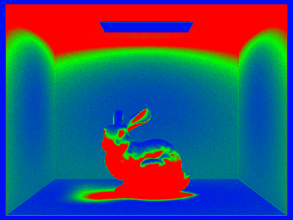

Project 3-1 here
CS184 Project 3-1
Matthew Tang, Kaitlyn Lee
Part 1
Walk through the ray generation and primitive intersection parts of the rendering pipeline.
Explain the triangle intersection algorithm you implemented in your own words.
A few images with normal shading



Part 2

[PathTracer] Rendering... 100%! (0.0561s)
Rendering... 100%! (0.1343s)

Rendering... 100%! (0.1911s)

[PathTracer] Building BVH from 2458 primitives... Done! (0.0000 sec)
Rendering... 100%! (25.8666s)
Rendering... 100%! (28.1280s)
Rendering... 100%! (32.4833s)
Optimized:
Rendering... 100%! (0.1522s)
[PathTracer] Building BVH from 2458 primitives... Done! (0.0009 sec)
Rendering... 100%! (87.3210s)
Rendering... 100%! (87.5035s)
[PathTracer] Building BVH from 5856 primitives... Done! (0.0001 sec)
optimized
cow
Rendering... 100%! (0.2105s)
Rendering... 100%! (0.1349s)
Rendering... 100%! (0.2507s)
[PathTracer] Building BVH from 5856 primitives... Done! (0.0023 sec)

Rendering... 100%! (26.1212s)
[PathTracer] Building BVH from 2464 primitives... Done! (0.0000 sec)
optimized
teapot
Rendering... 100%! (0.1228s)
Rendering... 100%! (0.1533s)
Rendering... 100%! (0.1564s)
[PathTracer] Building BVH from 2464 primitives... Done! (0.0009 sec)
Part 4
For part 4, we implemented indirect lighting. The idea is that we initialize L to be
Part 5
For part 5, we implemented adaptive sampling. This allows us to stop sampling for pixels that converge faster. We can do so by computing the I value (1.96 times the square root of sigma^2 over n). We can then compare this to maxTolerance * mu to decide if the pixel has converged. These values can be cleverly computed by just storing a running sum of the illuminance values as well as a running sum of the squares of the illuminance values (as described in the spec). To avoid repeated computation, we can only compute this check every sampleCountBuffer times.
We rendered the bunny scene with 2048 samples per pixel, 1 sample per light, and 5 max ray depth. Below are the heatmaps for the adaptive sampling convergence rates (left: no russian roulette, right: russian roulette)

